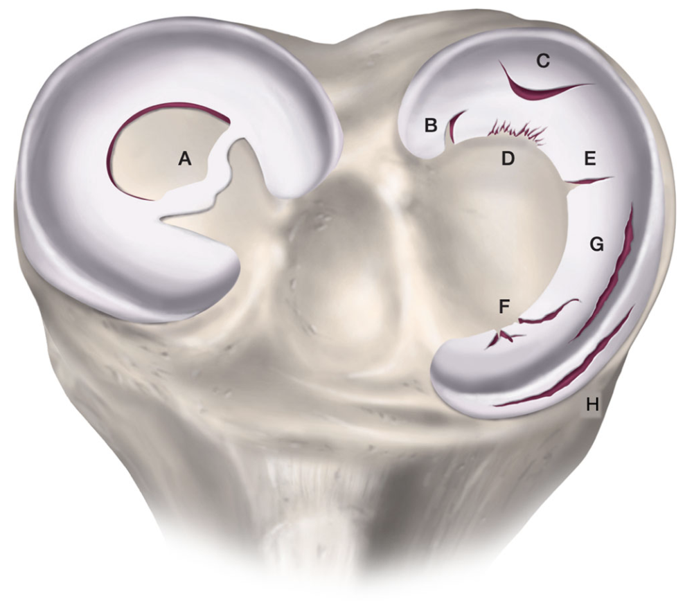

Introducción
Los meniscos son dos estructuras de fibrocartílago con forma de media luna que se encuentran dentro de la rodilla, uno en la parte interna (menisco medial) y otro en la externa (menisco lateral). Actúan como «amortiguadores» naturales de la articulación y son fundamentales para su correcto funcionamiento.
¿Para qué sirven los meniscos?
Cada vez que caminas, subes escaleras o practicas deporte, tus meniscos trabajan. Sus funciones principales son:
- Distribuir la carga: Reparten las fuerzas que recibe la rodilla. En extensión, absorben alrededor del 50% de la carga; al flexionar 90°, hasta el 85%.
- Amortiguar impactos: Protegen el cartílago articular de los golpes repetitivos.
- Dar estabilidad: Contribuyen a mantener la rodilla centrada y estable.
- Lubricar la articulación: Ayudan a que el líquido sinovial se distribuya correctamente.
- Propiocepción: Envían información al cerebro sobre la posición de la rodilla.

Vascularización del menisco
Zonas del menisco y vascularización
El menisco no recibe la misma cantidad de sangre en toda su extensión. Esto es importante porque la capacidad de cicatrización depende directamente del aporte sanguíneo:
- Zona roja-roja (periférica): Bien vascularizada. Las lesiones en esta zona tienen buena capacidad de curación y son las mejores candidatas para una reparación (sutura).
- Zona roja-blanca (intermedia): Vascularización parcial. La cicatrización es posible, aunque menos predecible.
- Zona blanca-blanca (central): Prácticamente sin aporte sanguíneo. Las roturas aquí tienen difícil curación y habitualmente requieren resección parcial.
Hoy en día, la tendencia científica es conservar todo el menisco posible. Extirpar tejido meniscal altera la biomecánica de la rodilla y puede acelerar el desgaste del cartílago. Por eso, siempre que la lesión y su localización lo permitan, la primera opción es reparar (suturar) el menisco.
Tipos de lesiones meniscales
Las roturas de menisco se clasifican según su origen y su forma:
Según su origen:
- Traumáticas: Asociadas a un mecanismo claro de lesión (giro brusco, caída, torcedura). Frecuentes en personas jóvenes y deportistas.
- Degenerativas: Se producen por desgaste progresivo del tejido meniscal, sin un traumatismo claro. Más habituales a partir de los 40–50 años.
Según el patrón de rotura:
- Longitudinales / verticales: Siguen la dirección de las fibras del menisco. Son las más habituales en lesiones traumáticas y las que mejor se suturan.
- En asa de cubo: Un tipo especial de rotura longitudinal en la que un fragmento se desplaza hacia el centro de la rodilla, pudiendo provocar un bloqueo articular.
- Radiales: Van desde el borde libre hacia la periferia, cortando las fibras de forma perpendicular.
- Horizontales: Dividen el menisco en una capa superior y otra inferior. Más típicas de lesiones degenerativas.
- Complejas: Combinan varios patrones. Habituales en meniscos degenerativos.
- Lesiones de raíz meniscal: Afectan a la inserción del menisco en el hueso. Funcionalmente equivalen a perder el menisco, por lo que su reparación es importante.

Tipos de roturas meniscales
Lesiones de raíz meniscal
Las raíces del menisco son los puntos donde este se ancla al hueso (tibia). Una rotura en la raíz impide que el menisco distribuya las cargas correctamente, lo que equivale funcionalmente a no tener menisco.
Estas lesiones son especialmente relevantes porque:
- Si no se tratan, pueden acelerar el desgaste del cartílago y favorecer la artrosis.
- La reparación quirúrgica (reinserción de la raíz con túnel óseo) ofrece buenos resultados cuando se realiza en pacientes seleccionados y sin artrosis avanzada.
- La raíz posterior del menisco medial es la localización más frecuente. Son lesiones más habituales a partir de los 50 años.

Reinserción de raíz meniscal con túnel óseo tibial
Opciones de tratamiento quirúrgico
Cuando una lesión meniscal requiere cirugía, esta se realiza habitualmente mediante artroscopia (cámara y pequeños instrumentos a través de dos pequeñas incisiones). Las principales opciones son:
Se retira únicamente la parte rota e inestable del menisco, conservando la mayor cantidad de tejido sano posible.
- Indicada en roturas degenerativas o en zonas sin riego sanguíneo
- Recuperación más rápida (semanas)
- Apoyo inmediato tras la cirugía
Se repara la rotura mediante suturas, preservando el menisco completo. Es la opción preferida siempre que sea técnicamente posible.
- Indicada en roturas traumáticas en zona vascular
- Recuperación más lenta (meses)
- Restricción de carga y flexión las primeras semanas
Se vuelve a fijar la raíz del menisco al hueso mediante un túnel óseo y suturas. Restaura la función biomecánica del menisco.
- Indicada en roturas de raíz sin artrosis avanzada
- Recuperación similar a la sutura meniscal
- Evita la pérdida funcional del menisco

No todas las lesiones meniscales necesitan cirugía. Muchas lesiones degenerativas responden bien al tratamiento conservador (rehabilitación, antiinflamatorios, fortalecimiento muscular). El consenso ESSKA recomienda un periodo de tratamiento conservador de 3 a 6 meses antes de considerar la cirugía en lesiones degenerativas.
Posibles complicaciones
La artroscopia de rodilla es una cirugía segura con una tasa de complicaciones baja. No obstante, como en cualquier intervención, pueden presentarse:
- Infección: Rara (menos del 1%). Se previene con antibióticos y técnica estéril.
- Trombosis venosa profunda (TVP): Poco frecuente en artroscopia aislada. Se puede prevenir con movilización precoz y, en algunos casos, heparina.
- Derrame articular persistente: Hinchazón que puede durar semanas, especialmente tras sutura meniscal.
- Rigidez articular: Se previene con rehabilitación adecuada.
- Re-rotura de la sutura: Puede ocurrir en un 10–20% de las reparaciones meniscales, dependiendo del tipo y localización de la lesión.
- Lesión neurovascular: Excepcional.
Estancia hospitalaria
La cirugía artroscópica de menisco es habitualmente un procedimiento ambulatorio o con una estancia hospitalaria muy corta (24 horas como máximo).
Sutura meniscal / reinserción de raíz: Se recomienda el uso de ortesis de rodilla con control de flexo extensión y muletas. El apoyo será parcial o nulo según la indicación de tu cirujano. Alta habitualmente al día siguiente.
 Ortesis de rodilla con control de flexo extensión
Ortesis de rodilla con control de flexo extensiónTratamiento al alta
Se te pautará medicación analgésica y antiinflamatoria. En el caso de la sutura meniscal, es habitual prescribir tratamiento anticoagulante (heparina) durante el periodo de restricción de carga.
Habitualmente: a la semana (revisión de heridas), al mes, a los 3 meses y a los 6 meses. En suturas meniscales, el seguimiento suele ser más estrecho.
Administración de heparina
En algunos casos, especialmente tras sutura meniscal o reinserción de raíz (donde la carga está limitada), se prescribe heparina de bajo peso molecular para prevenir trombosis. La duración habitual es de 15 a 30 días, dependiendo del tiempo que se mantenga la restricción de carga, salvo indicación diferente de tu cirujano.
Tras una meniscectomía parcial simple, con apoyo inmediato, habitualmente no es necesaria la heparina.
La heparina se aplica por vía subcutánea, preferentemente en el abdomen o la parte externa del muslo:

Administración subcutánea de heparina
- Lávate las manos antes y después de la inyección.
- Limpia la piel con una gasa con alcohol.
- Pellizca la piel e introduce la aguja en ángulo recto (90°).
- Inyecta lentamente y no masajees tras la aplicación.
- Alterna los lados cada día.
Si aparecen hematomas grandes, sangrado inusual o dolor persistente en la zona de punción, contacta con tu médico.
Recuperación según el tipo de cirugía
La recuperación varía significativamente según el procedimiento realizado. A continuación se muestran los hitos principales de cada uno:
Meniscectomía parcial
- Apoyo tolerado con muletas desde el primer día
- Hinchazón y molestias moderadas
- Hielo, elevación y ejercicios suaves de movilidad
- Objetivo: flexión progresiva hasta 90°
- Retiro de muletas según tolerancia
- Marcha sin cojera como objetivo
- Inicio de fortalecimiento de cuádriceps
- Movilidad completa sin dolor
- Progresión de ejercicios de fuerza y equilibrio
- Bicicleta estática, elíptica, natación
- Actividades cotidianas normales
- Inicio de carrera suave (semana 4–6)
- Retorno deportivo progresivo
- Ejercicios de agilidad y pliometría
- Vuelta al deporte completo si se cumplen criterios funcionales
Sutura meniscal / Reinserción de raíz
- Rodillera bloqueada y muletas
- Carga parcial o nula según indicación
- Flexión limitada hasta 90°
- Ejercicios de cuádriceps en extensión
- Hielo, compresión y elevación
- Progresión de la flexión (objetivo: 120°)
- Carga parcial progresiva
- Bicicleta estática suave
- Fortalecimiento muscular progresivo
- Valorar retirada de rodillera (semana 6)
- Movilidad completa
- Carga total sin muletas
- Marcha normalizada
- Ejercicios de propiocepción y equilibrio
- Bicicleta, elíptica, natación
- Inicio de carrera progresiva (3–4 meses)
- Ejercicios de agilidad y pliometría
- Retorno al deporte (5–6 meses)
- Criterios funcionales para el alta deportiva
Los plazos indicados son orientativos. Tu cirujano adaptará el protocolo a tu situación concreta, teniendo en cuenta el tipo de lesión, la calidad de la reparación, la presencia de lesiones asociadas y tu nivel de actividad.
Expectativas vs. Realidad
| Lo que muchos esperan | La realidad clínica |
|---|---|
| «Me opero y en una semana estoy haciendo deporte.» | La meniscectomía permite una vuelta rápida (6–8 semanas), pero la sutura requiere 4–6 meses para volver al deporte de forma segura. |
| «Si me quitan el menisco no pasa nada.» | Perder tejido meniscal aumenta la presión sobre el cartílago. Por eso hoy se busca conservar el máximo tejido posible. |
| «La sutura siempre cicatriza.» | La mayoría de las suturas evolucionan bien, pero existe un 10–20% de casos en los que la reparación puede fallar. |
| «Si tengo una rotura de menisco en la resonancia, necesito cirugía seguro.» | No siempre. Muchas lesiones degenerativas responden bien al tratamiento conservador. La cirugía se reserva para síntomas mecánicos persistentes. |
| «Después de operarme la rodilla quedará como nueva.» | El objetivo es reducir los síntomas y proteger la articulación a largo plazo. El resultado final depende del tipo de lesión y del estado previo del cartílago. |
| «Tras una sutura, la recuperación es igual que tras una meniscectomía.» | No. La sutura necesita protegerse para que cicatrice: muletas, rodillera y restricción de carga durante semanas. La meniscectomía permite apoyo inmediato. |
| «A mi edad ya no merece la pena reparar el menisco.» | La edad por sí sola no es contraindicación. Lo que importa es el estado del cartílago, la localización de la lesión y tu nivel de actividad. |
8 cosas que debes saber
- El menisco es fundamental para la salud de tu rodilla. Perder tejido meniscal aumenta el riesgo de artrosis a largo plazo, por eso siempre intentamos conservar el máximo posible.
- No todas las roturas de menisco necesitan cirugía. Las lesiones degenerativas a menudo mejoran con rehabilitación, fortalecimiento muscular y modificación de actividades.
- La recuperación tras una meniscectomía es mucho más rápida que tras una sutura, pero la sutura protege tu rodilla a largo plazo.
- Si te han realizado una sutura, respetar los plazos de carga y flexión es esencial para que el menisco cicatrice correctamente. No te precipites.
- Las lesiones de raíz meniscal son especialmente importantes. Funcionalmente, equivalen a no tener menisco, por lo que repararlas puede prevenir la artrosis precoz.
- El fortalecimiento del cuádriceps y los isquiotibiales es clave en la recuperación. Una musculatura fuerte protege la rodilla y compensa parcialmente la función del menisco.
- Los deportes con giros, pivotaje y cambios de dirección son los de mayor riesgo para el menisco. Un buen programa de prevención (calentamiento neuromuscular) puede reducir el riesgo de lesión.
- Mantener un peso saludable es una de las mejores cosas que puedes hacer por tus meniscos y por tu rodilla en general. Cada kilo de más multiplica la carga sobre la articulación.
Signos de alarma
Durante tu recuperación, contacta con tu cirujano o acude a urgencias si aparecen:
- Fiebre superior a 38 °C, especialmente si persiste varios días.
- Herida con enrojecimiento progresivo, secreción o mal olor.
- Hinchazón brusca y dolor en el gemelo (signo de posible trombosis).
- Dolor intenso que no cede con la medicación pautada.
- Bloqueo de la rodilla (no puedes extenderla o flexionarla).
- Dolor torácico, palpitaciones o dificultad para respirar.
Preguntas frecuentes
¿Cuánto tiempo estaré con muletas?
¿Puedo conducir después de la cirugía?
¿Podré volver a hacer deporte?
¿La resonancia dice que tengo rotura de menisco, ¿me tengo que operar?
¿Qué pasa si la sutura falla?
¿Necesitaré rodillera?
¿El menisco se regenera?
¿Qué es una reinserción de raíz meniscal?
Recuerda
Cada lesión meniscal es diferente. La clave es un diagnóstico adecuado, un tratamiento personalizado y, si hay cirugía, una rehabilitación constante y paciente. Confía en el proceso y en las indicaciones de tu cirujano.